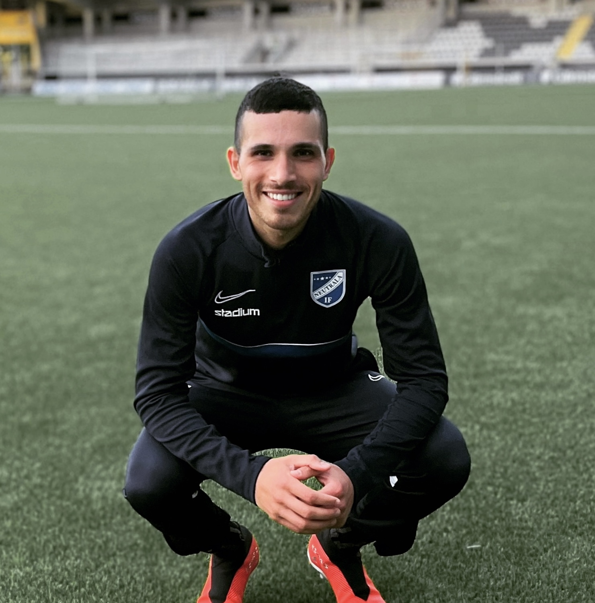

Profil
Ambitiös, nyfiken och hårt arbetande student söker arbete. Redo att gå ut i arbetslivet med en hunger för att arbeta och utvecklas både indivudellt och karriärsmässigt. Har en passion för IT, är duktig på att kommunicera och samarbeta. Skicklig på olika aspekter av sociala medier, behärskar programvara för kontorsadministration och övriga standard datorkunskaper. Har en positiv attityd, är entusiastisk, lyhörd och driven.
Utbildning
Allmän kurs , Folkhögskolan Göteborg , Göteborg
augusti 2019 — juni 2020
- Alllmän gymnasial kurs.
- Gick ut med toppbetyg.
.NET utvecklare, Teknikhögskolan , Göteborg
augusti 2021 — Nuvarande
- Läser på yrkeshögskolan.
- Målet är att bli ny examinerad 2023 med en examen inom programmering och IT utveckling.
Arbetslivserfarenhet
Budbee lager Göteborg
September 2021 - Nuvarande
- I min arbbetsroll måste man vara stresstålig, noggrann och samarbetsvilig.
- Jag kör bland annat truck och sorterar packet.
Lärare och elevassistans på Grundskolan Göteborgs stad, Göteborg
mars 2020 — Nuvarande
- Timvikarie på grundskolan i Göteborg.
- Lärare där jag fick lära ut engelska, svenska och matte samt hålla i idrotten.
- Väldigt lärorikt och det fick mig att utvecklas genom att vara lyhörd och hålla många bollar i luften.
Konsult på Onepartner Group, Göteborg
augusti 2020 — juni 2021
- Varu uppkast för DHL
- Truckförare.
- Jag blev stresståligt och lärde mig att hålla många bollar i luften.
- Inom konsult rollen får du lära dig att ingen dag är den andra lik och du kan hamna på vilken arbetsplats som helst. Detta gav mig erfarenhet av att bli en Kameleont. Du fick axla olika roller på de olika jobben.
Vakt på Show Security , Göteborg
januari 2018 — januari 2019
- Jag var vakt på olika event.
- Man fick lära sig att hålla lugnet i tuffa situationer. nogrannhet var A och O i min yrkesroll.
Fritidsledare på Fritidsgården Härryda, Härryda
januari 2016 — februari 2017
- Som fritidsledare är det viktigt att man är lyhörd, har ett leende på läpparna och ta ett stort ansvar för barnens säkerhet och deras mående.
- Jag fanns för ungdomarna som en lyssnade kompis. Och såg till att dom mådde bra och inte gick ut och gjorde något som var dåligt för dom.
Butikförsäljare på Moadamiyat Alsham AB , Damaskus
januari 2013 — januari 2014
- Butikförsäljare inom teknikprylar.
- Lyhördhet, entusiasm och kundens bästa är viktigt inom detta yrke anser jag. Och detta lärde jag mig tidigt under mitt år på företaget.
- Jag såg alltid till att kunden kände sig nöjd och kunderna kom alltid tillbaka till oss.
Intresse
Att beskriva ens intressen kan vara ibland klurigt. Vad är ens intressen egentligen förutom det vanliga. Att umgås med sin familj och vänner. När jag tänker efter på vad mina intressen kan jag bara tänka på två saker. Fotboll och IT. Fotbollen som är min första stora kärlek. Så länge som jag kan komma ihåg har jag alltid älskat fotboll. Om mina föräldrar undrade vad jag var, gick dom alltid till fotbollsplanen för dom visste att 99% chans hittade dom mig där. Jag vill i framtiden arbeta med något som har med fotboll vid sidan av. Min andra kärlek är IT. När jag fick min första dator av min pappa blev jag direkt kär. Jag kan sitta timmar och programmera och lära mig nytt om allt som har med IT att göra. Varför IT fångade mitt intresse så mycket är för att jag har alltid varit nyfiken och vill alltid lära mig mer, vilja utvecklas. IT utvecklas hela tiden, från hur den såg ut runt 90-talet tills nu har den utvecklas med raketfart. Jag slutade aldrig vara nyfiken på hur långt man kan gå med IT. Så med andra ord mina intressen är fotboll och IT.